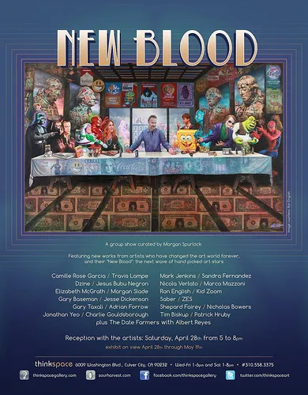

Exhibitions
New Blood, Thinkspace Gallery, Culver City, California, US, April 28–May 19, 2012.
Literature
Ron English, Original Grin: The Art of Ron English (Paris: Cernunnos, 2019), p. 258. ISBN 978-2374950938.
Notes
This work appears in Thinkspace Gallery’s Flickr exhibition photographs for New Blood, curated by Morgan Spurlock.
Thinkspace Projects documents the work as Morgan’s Last Supper, 2012, oil and collage on panel, 48 × 24 inches.
The work also appears on the New Blood showcard advertisement.
This work references Leonardo da Vinci’s The Last Supper and Morgan Spurlock.
Ancillary Documentation
The following materials document the work through showcard advertisement material and reference images.


Selected Online Circulation
Selected online documentation related to this work, its exhibition context, source reference, and later circulation. This list is not exhaustive.